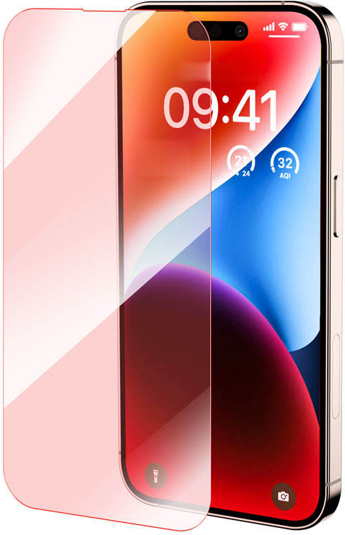
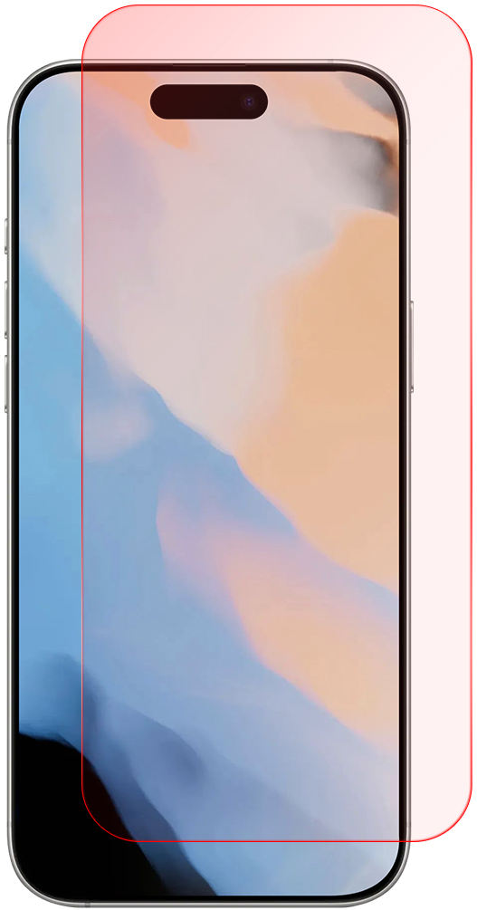
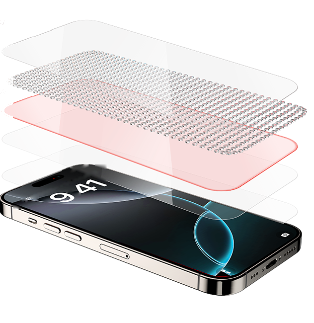
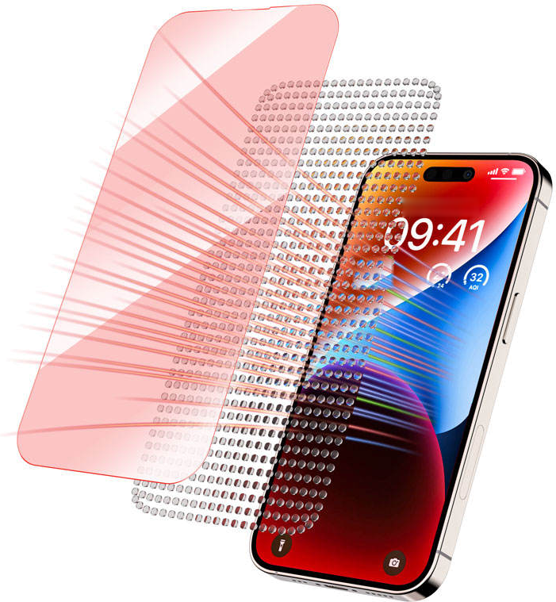

A portion of blue light is absorbed.
It leaves at longer, red wavelengths.
The rest passes through clearly.
Quantum-Dot Screen Protector


Clean the screen
Wipe, then lift any dust.
Fit the applicator
It lines the glass up for you.
Pull the tab
Wait ten seconds. Done.

Quantum dots absorb a portion of blue light and re-emit it at longer red wavelengths.
2/3